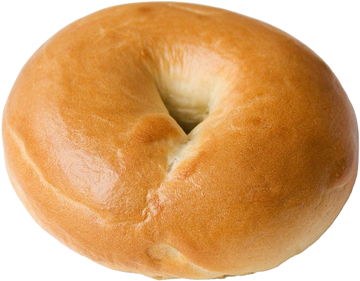

back to breads
plain bagel
makes 7 plain bagels

tools
- small bowl
- large bowl
- kitchen scale
- pot - deep enough to cover bagels in water
- slotted spoon
- baking sheet
- parchment paper
ingredients
- 9 grams active dry yeast
- 29 grams granulated sugar
- 345 grams lukewarm water
- 660 grams ap flour
- 9 grams salt
- 2 tablespoons honey for pre-baking boil
steps
knead & proof dough
- in small bowl combine sugar, lukewarm water, and yeast. let sit for 5 minutes.
- in large bowl weigh out flour and salt.
- add wet to dry in large bowl. mix until flour is just absorbed.
- move dough from large bowl onto lightly floured surface and knead for 10-15 minutes, or until dough is smooth and elastic.
- after kneading, move dough to lightly oiled large bowl and cover. cold proof in fridge overnight, or up to 14 hours.
shape dough
- after cold proof, place dough on counter to warm up for 30 minutes to an hour.
- once warm, cut dough at 155 grams. keep dough pieces covered. you should have about 7 pieces at this weight, but feel free to adjust to your liking.
- shape dough pieces into balls. keep dough balls covered.
- with the dough ball in your hand, pierce the center of the ball with your finger. stretch and shape the ball into a bagel shape. make the center of the bagle ~4 inches wide. the hole should be much larger than you expect, the dough will retract while it rests and once it's boiled!
- once all bagels are shaped, let rest for 15 minutes.
boil & bake dough
- while bagels are resting, set oven to preheat @ 425F
- fill pot with enough water to cover bagels, add the honey, cover pot, set water to boil.
- after resting, place bagels in boiling water for 1 minute, flip and boil for another minute on the other side. remove from water and place on baking sheet lined with parchment paper.
- once all bagels are boiled, place in oven for 20-25 minutes or until golden brown
after baking options
- eat all 7 bagels RIGHT away!
- keep covered on counter for 2-3 days.
- slice in half and freeze for the week, though they can last a few months frozen!
- if sliced and frozen the bagels are easily reheated in a toaster!
back to breads